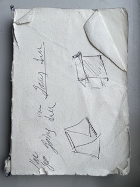

Notes from Author,
Thaqif Nazri
––––––––––––
A cabinet is not necessarily a narrative. It is a place where things accumulate. A note sits beside a photograph; a book reference sits beside a memory. I hope you encounter objects that might otherwise remain overlooked in this or the other cabinets.
In that sense, this cabinet becomes an inventory of the everyday rather than a display of masterpieces or conclusions.
Unlike a search engine, the cabinet encourages wandering. Opening a book, pulling out a drawer, finding a note—these are small acts of attention.
Perec was interested in observing what people usually ignore:
What happens every day and returns every day.
There is also a connection to exhaustion. Digital spaces often demand constant efficiency and attention.
A cabinet is different. It allows for detours, pauses, and incomplete connections.